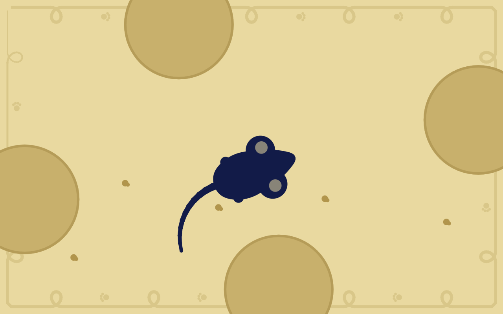
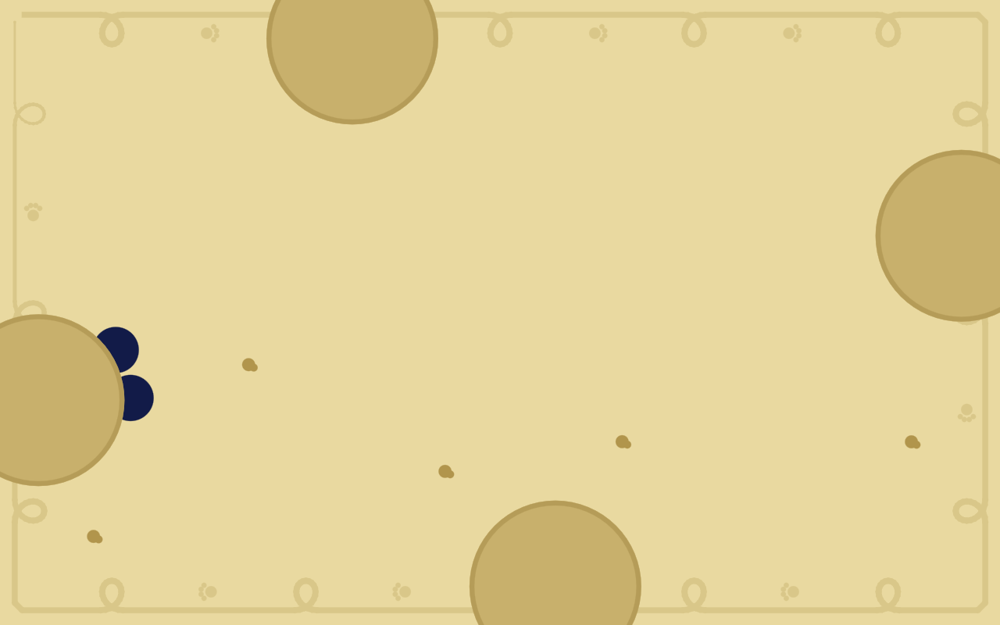
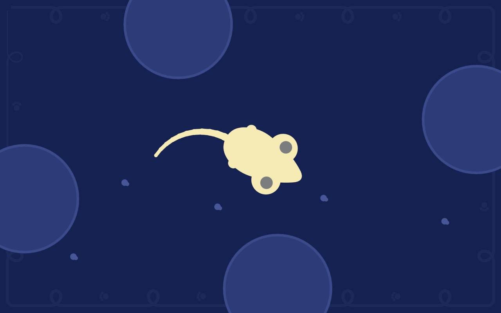
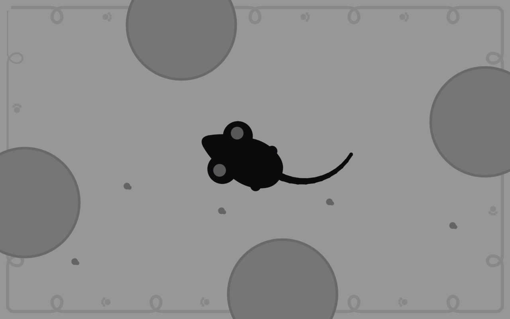

A mouse that behaves like one
It hides
Then ears or a tail show at the edge of a mound. Nothing else moves.
It comes out
It peeks, sniffs for crumbs, creeps and freezes, never at a steady pace.
It notices paws
A pounce beside it sends it running. A slow paw makes it freeze.
It can be caught
About one good try in three to start with. The game then follows how your cat is doing.
Drawn for a cat's eyes
Cats see brightness contrast best, then blue against yellow. So there is no red against green, no flashing and no fine texture, just bold shapes on a plain field. There are three palettes and three mouse sizes to compare, measured in millimetres.



For the human
Way out
Hold two opposite corners for 2 seconds. With a keyboard, hold Esc.
On a PC
Left click is a paw. Right click leaves a second paw resting on the glass.
Watch mode
Some cats only want to look. It needs no touch.
Afterwards
Keep it short, stay in the room, and end on a catch and a real treat.
The browser version is a try-out. It goes fullscreen, ignores Back and asks before the tab closes, but it cannot block the system's own swipes. On a tablet, turn on screen pinning (Android) or Guided Access (iPad). The sizes depend on what the browser says about your screen. Check them against a ruler on the start screen.
Where it is going
Next it meets real cats. If they like it, it gets a full session of hunting, a treat and a nap, then a bug and a fish to chase. An Android tablet app is planned. It is not on any store yet.
No ads, no accounts, no purchases, and the Android app asks for no internet access.